Savitar
Itália
Trufa fresca das quatro temporadas e a linha mais completa de trufados do catálogo.
Importadora · São Paulo
Trufa fresca da temporada, caviar, açafrão em pistilo, funghi porcini, azeites extra virgem, massas de grano duro e conservas de origem italiana.
18 casas italianas representadas · Importação própria · Entrega na grande São Paulo
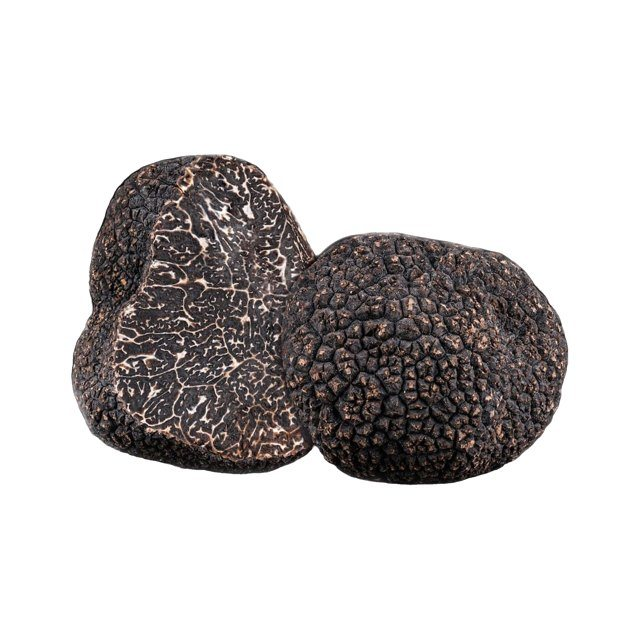
Trufa fresca
Quatro espécies de trufa fresca chegam sob encomenda, cada uma no seu período de colheita europeu. O estado abaixo segue o calendário do Catálogo 2026 e acompanha a data de hoje.
Estado calculado pelo calendário de colheita.
Portfólio
Cada família reúne as casas italianas que a compõem. A seleção segue origem, safra e constância de fornecimento — critérios que sustentam a cozinha profissional ao longo do ano.
Trufa branca e negra frescas na temporada, e a linha conservada o ano todo.
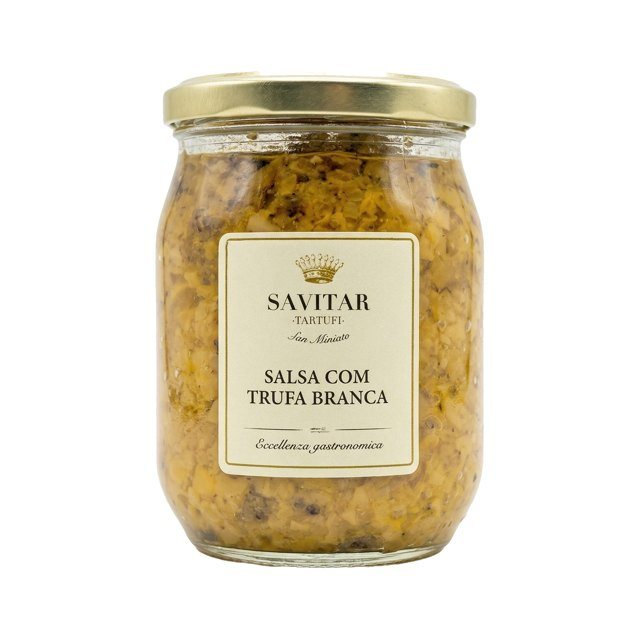
Azeites, manteigas, méis, sais, molhos e queijos preparados com trufa.
Beluga italiano e outras seleções de esturjão, importados sob encomenda.
Brunello di Montalcino, Chianti Classico, Amarone e supertoscanos de Bolgheri.
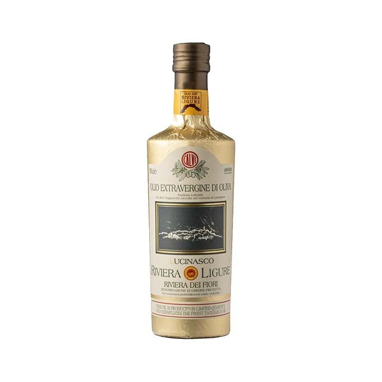
Extra Virgem de safra, D.O.P. e I.G.P., e Aceto Balsâmico envelhecido em Modena.
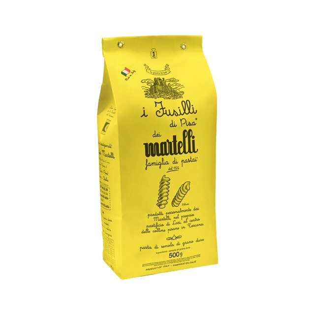
Grano duro trefilado em bronze, de secagem lenta, e massas ao ovo de Veneza.
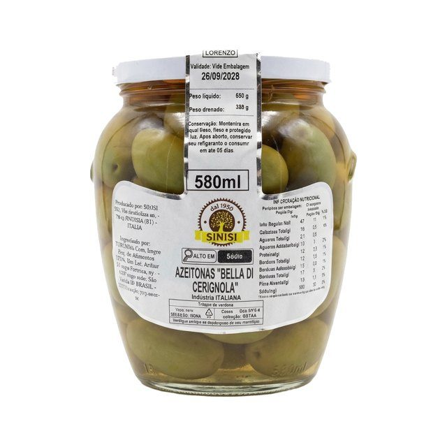
Bella di Cerignola, Taggiasca, Leccino, alcachofras e vegetais em azeite.
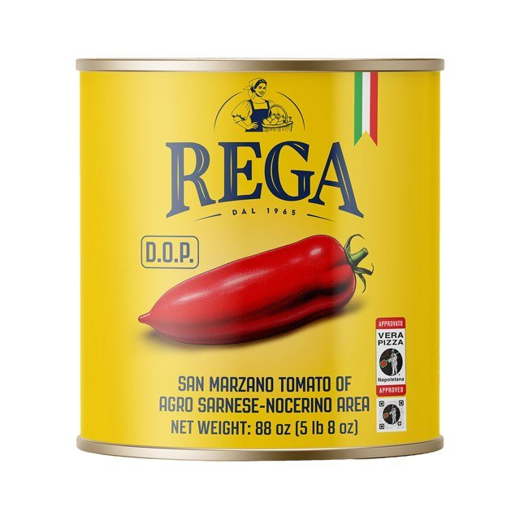
San Marzano D.O.P. do Agro Sarnese-Nocerino, pelados, passatas e molhos prontos.
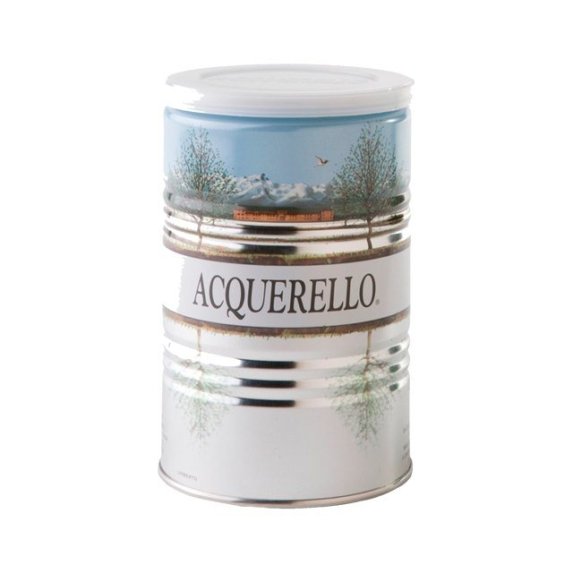
Carnaroli envelhecido, para risoto de ponto firme, e caldos granulados sem glutamato.
Rótulos-assinatura
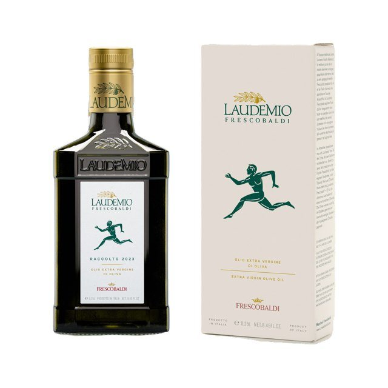
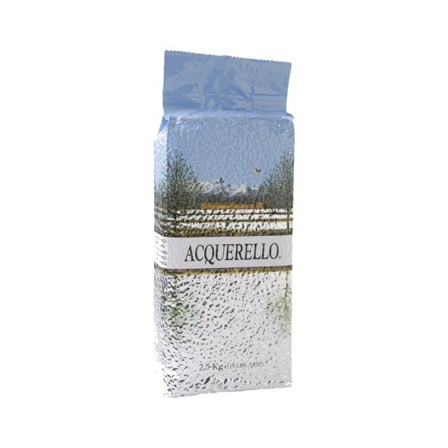
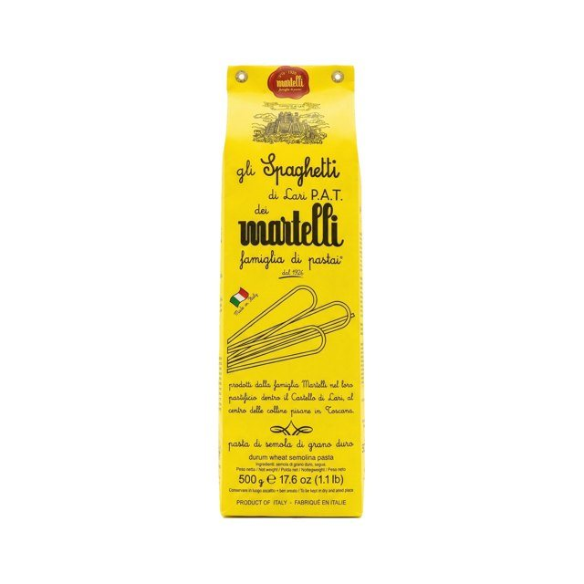
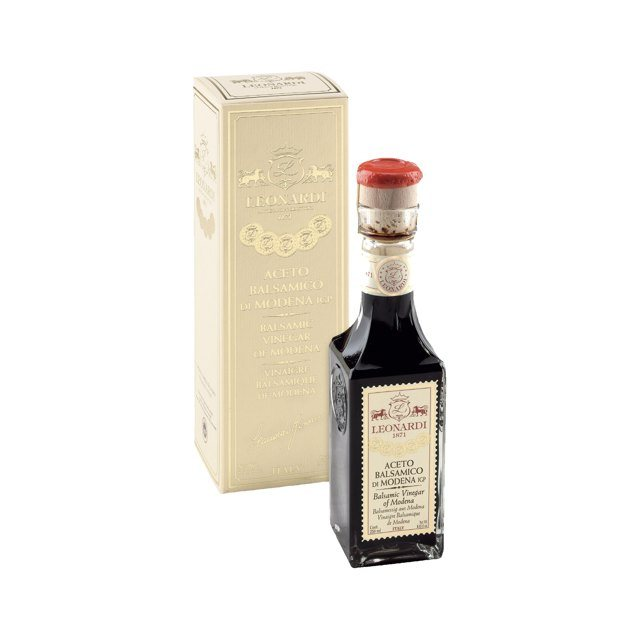
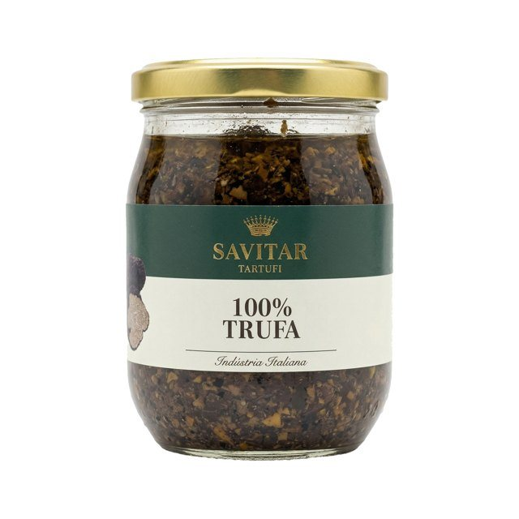
A casa
Alimento raro — pelo sabor, pela pureza, pela sofisticação e pela singularidade.
A Toscana seleciona, importa e distribui ingredientes italianos desde 2000. A operação é de importação própria: a relação é direta com o produtor, a cadeia é acompanhada da origem até a cozinha, e cada rótulo do catálogo responde por um critério declarado de seleção.
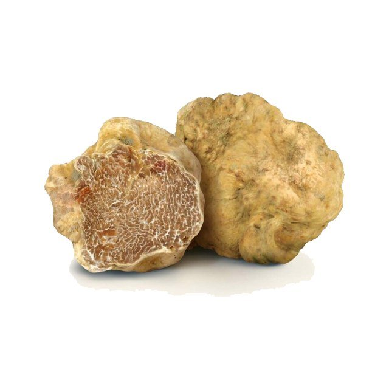
Casas produtoras
Produtores históricos, em boa parte familiares, com décadas — em alguns casos séculos — de tradição em suas regiões de origem.
Itália
Trufa fresca das quatro temporadas e a linha mais completa de trufados do catálogo.
Modena, Emília-Romanha1871
Aceto Balsâmico envelhecido em barris de madeira, na acetaia da família Leonardi.
Toscana
Azeite Extra Virgem de primeira prensagem, referência da colheita toscana.
Ligúria, Riviera dei Fiori
Azeite de oliva Taggiasca e azeitonas em extravergine, da costa ligure.
Sicília
Azeites Extra Virgem D.O.P. Val di Mazara e Valli Trapanesi, e I.G.P. Sicília.
Apúlia
Frantoio familiar de conservas em azeite: tomate cereja semi-seco, alcachofra e carciofi grigliati.
Apúlia
Azeitonas Bella di Cerignola em salmoura e pinoli do Mediterrâneo, selecionados à mão.
Veneza, Vêneto
Massa ao ovo do Harry's Bar, com sete ovos frescos por quilo de sêmola de grano duro.
Lari, Toscana1926
Massa de grano duro trefilada em bronze e secada lentamente, pela mesma família há um século.
Piemonte
Arroz Carnaroli envelhecido, considerado por muitos chefs o arroz de referência para risoto.
Agro Sarnese-Nocerino, Campânia
Tomate Pelado San Marzano D.O.P., colhido na área da denominação, no vale do Sarno.
Itália
Caldos granulados sem glutamato, base limpa para cozinha profissional.
Itália
Caviar Beluga italiano, de criação controlada e maturação lenta.
Vêneto
Amarone e Valpolicella de culto, entre os vinhos mais procurados da Itália.
Chianti Classico, Toscana
Clássicos de guarda do Chianti, com meio século de safras memoráveis.
Montalcino, Toscana
Brunello artesanal de produção limitada, elaborado à moda antiga.
Montalcino, Toscana
Sangiovese de vinhas antigas, de elegância e longevidade raras.
Bolgheri, Toscana
Supertoscanos de perfil bordalês, na denominação mais cobiçada do litoral toscano.
Contato comercial
Condições comerciais
Catálogo 2026
Portfólio completo, condições comerciais e a disponibilidade da trufa da temporada. O envio é por WhatsApp ou e-mail, conforme a preferência indicada no formulário.
Os dados servem apenas ao envio do catálogo e ao contato comercial.
Ou envie o pedido pelo WhatsApp.